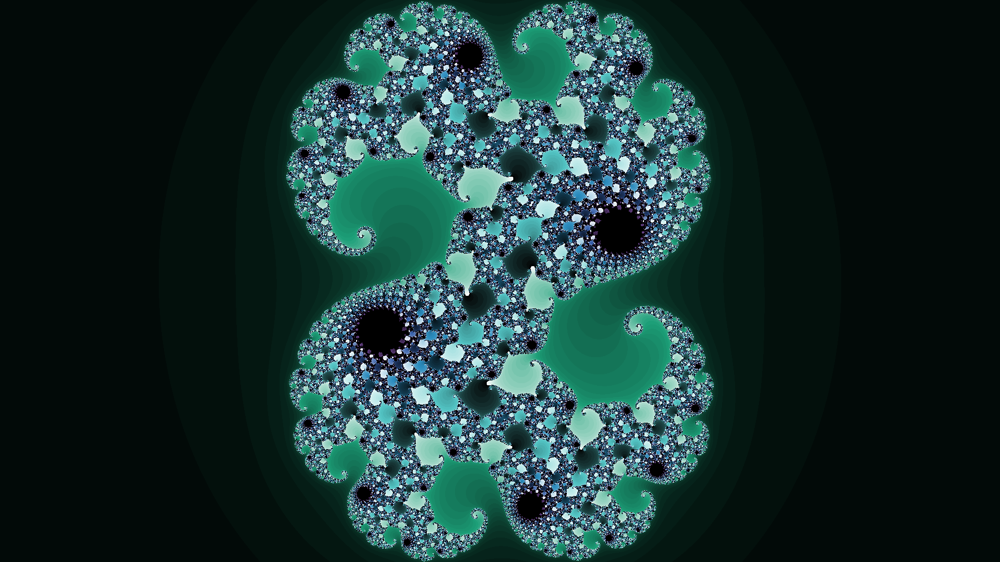

In the fall semester of my junior year of undergrad, I worked with a friend on an independent study about agent-based modeling. I didn’t have a lot of programming experience at the time, nor did I want to learn. I simply wasn’t interested. We used a software called NetLogo (good language for agent-based modeling) in our study. My friend, who had a bit more programming experience than I did, realized that this software would be good for generating the Mandelbrot Set and Julia Sets. Below is an image he generated:
